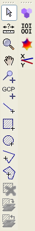
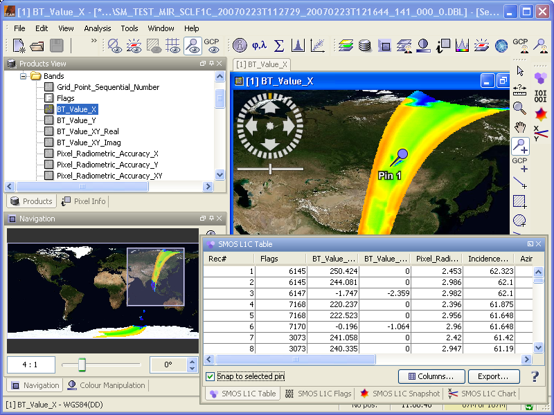
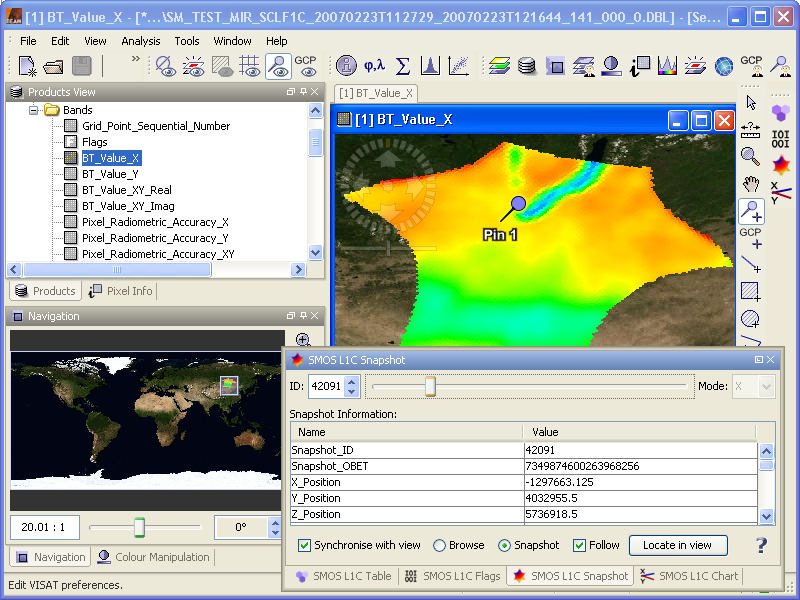
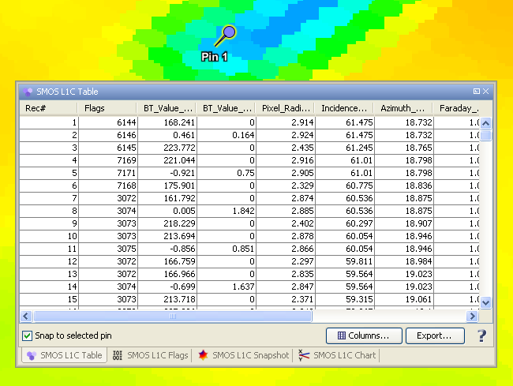
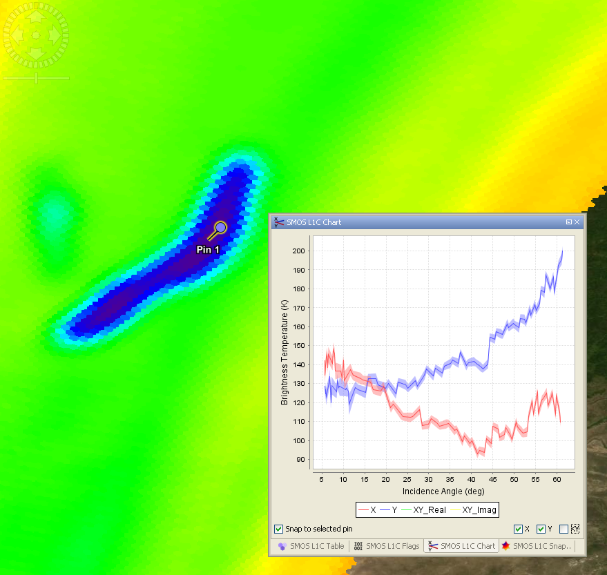
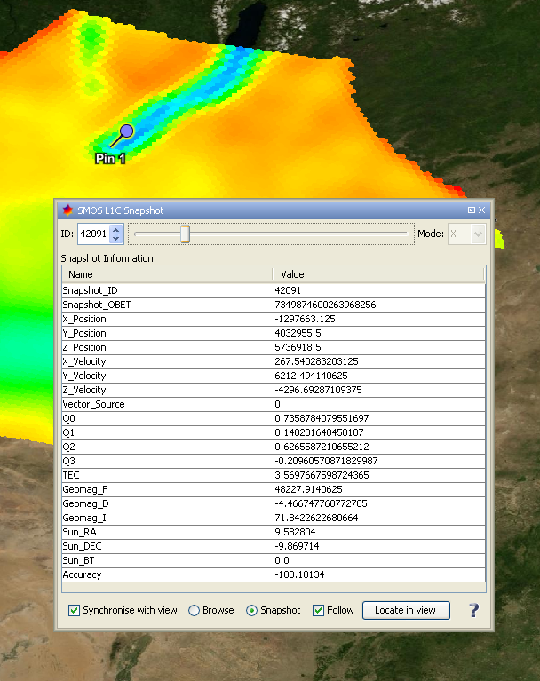

| SMOS-Box Tools |
|
Readers not familiar with the SMOS-Box software might read the Introduction to the SMOS-Box and the explanation of the representation of SMOS Data in BEAM first.
Version 1.0 of the SMOS-Box is comprised of four tools:
 the grid point data table,
the grid point data table,
 the grid point flag matrix diagram,
the grid point flag matrix diagram,
 the grid point brightness temperature chart, and
the grid point brightness temperature chart, and
 the snapshot information tool. The tools can be invoked by clicking on the corresponding icons arranged in
the SMOS-Box toolbar shown below.
the snapshot information tool. The tools can be invoked by clicking on the corresponding icons arranged in
the SMOS-Box toolbar shown below.

By default the SMOS-Box toolbar is located next to the standard VISAT toolbar .
When a SMOS product is opened in VISAT, the list of available band data is displayed in the Products View. Double-clicking onto a band name opens a window displaying the band data as an image (see the screenshots below). Due to the BEAM data model used internally to represent all EO data products, it is required to resample SMOS L1C and L2 gridded data to rectangular raster data. The images created from SMOS products in BEAM thus use the Geographic WGS-84 coordinate reference system.
The geo-coding of all SMOS data products is provided by the same WGS-84 geographic coordinate reference system. The mapping between image pixels and SMOS grid points is established by a lookup table being a raster dataset of 16384 by 8192 image pixels, yielding about 30 image pixels for an equatorial grid cell of the ISEA4H-R9 grid.
For SMOS L1c Science products the image displayed by default when double-clicking on a band is computed on-the-fly. Actually, the image is computed from the snapshot data in the same manner as a Browse product is computed from the corresponding Science product.


Using the grid point data table
The grid point data table tool can be invoked by clicking on the icon in the
SMOS-Box toolbar. The table shows all measurements made for the currently selected grid point, with a single
measurement record per row. By default the selected grid point is defined by the position of the mouse pointer.
By activating the Snap to selected pin option the selected grid point may also be defined by the
position of a currently selected pin.
The measurements displayed in the table columns can be explicitly choosen by clicking on the Columns... button, which pops up a dialog for selecting or deselecting individual measurements. The whole table can be exported to character-separated text, either stored in a file or the clipboard.

Using the grid point flag matrix
The grid point flag matrix tool can be invoked by clicking on the icon in
the SMOS-Box toolbar. The flag matrix shows all flags associated with measurement records acquired for the currently
selected grid point, with a single measurement record per column and a single flag per row. A raised flag is
indicated by a coloured entry in the flag matrix. By default the selected grid point is defined by
the position of the mouse pointer. By activating the Snap to selected pin option the selected grid
point may also be defined by the position of a currently selected pin.

Using the grid point brightness
temperature chart
The grid point brightness temperature chart tool can be invoked by clicking on the
icon in the SMOS-Box toolbar. The brightness temperature chart shows a diagram of the brightness temperatures
measured for the currently selected grid point. A single series of brightness temperatures versus incidence angle is
shown for each polarisation mode. By default the selected grid point is defined by the position of the mouse
pointer. By activating the Snap to selected pin option the selected grid
point may also be defined by the position of a currently selected pin.
For the brightness temperature measurements made in the X and Y copolarisation modes the uncertainties are shown as error bars. The display of individual polarisation modes can be switched on and off by activating or deactivating the corresponding checkboxes.

Using the snapshot information tool
The snapshot information tool can be invoked by clicking on the
icon in the SMOS-Box toolbar. The tool can be used for browsing the 'Swath Snapshot List' contained in the SMOS L1c
Science products. The components of this tool are described below.
For selecting an individual snapshot the tool provides a spinner which allows to manually specify a certain snapshot ID and to navigate forward and backward in the list of snapshot IDs.
The slider provides an explicit mechanism for fast navigation through the list of snapshot IDs.
The combobox provides a facility for selecting a certain polarisation mode (any, H, V, HV). When a certain mode is selected, only IDs of snapshots acquired at the selected mode are navigable (i.e. IDs of snapshots acquired at a different mode do not appear in the list of snapshot IDs) by the spinner and slider components.
While navigating through the snapshots, the corresponding 'Snapshot Information' like TEC and geomagnetic field, etc. are displayed in a table.
Enabled only when there is an active product scene view (PSV). Synchronising implies:
Changing the active PSV while being in synchonised mode implies:
There are two radio buttons for selection the raster data source for the active PSV. Selecting the 'Snapshot' radio button implies that, firstly, the active PSV shows the raster data of the selected snapshot instead of the browse, and, secondly, the band displayed in the active PSV becomes associated with the ID of the selected snapshot.
Selecting the 'Browse' radio button implies that, firstly, the active PSV shows the raster data of the browse instead of the selected snapshot, and, secondly, the band displayed in the active PSV is not associated with a snapshot.
When checked the viewport of the active PSV automatically zooms to the region of the selected snapshot.
When pressed the viewport of the active PSV zooms to the region of the selected snapshot.
